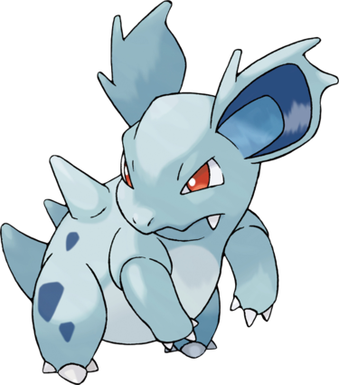

Nidorina est un Pokémon femelle au corps bleu tirant vers le blanc. Elle possède des taches bleu foncé sur ses pattes arrière en plus de piques hérissant son dos. Ses yeux sont rouges et elle a deux grandes oreilles bleu foncé et bleu clair. Elle est munie de deux canines, mais n'a pas de moustaches, contrairement à sa pré-évolution. Elle a trois griffes à chaque patte.